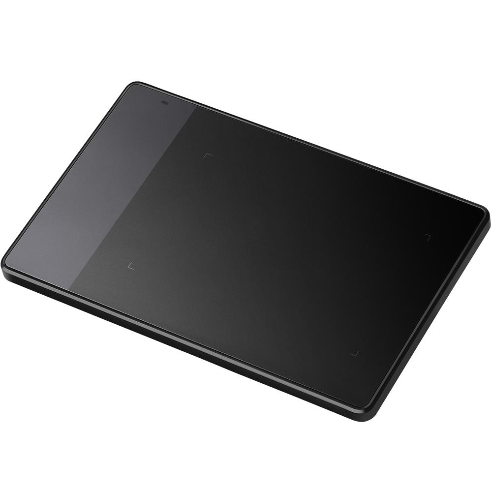
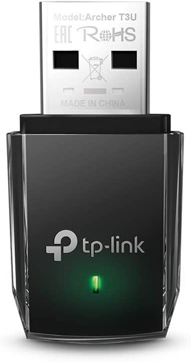
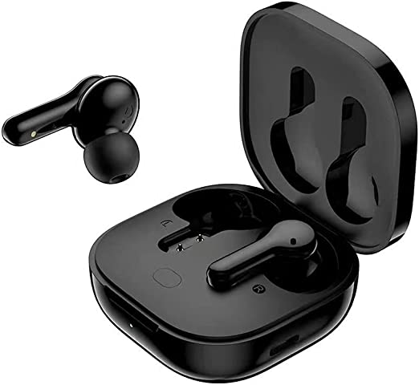

Dispositivos sem fio
Os periféricos sem fio são dispositivos instalados junto ao computador, cuja a função é auxiliar na comunicação homem/máquina. Estes dispositivos poderão estar na periferia (em torno) do computador ou dentro do próprio gabinete.
Informações principais
- Boa marca;
- Compatibilidade com seu dispositivo;
- Atender a sua demanda.
Mesa Digitalizadora Huion 4000LPI Pequena Inspiroy - 420 Preto R$179,99
Á vista
Em até 8x de R$ 26,46 sem juros no cartão
Adaptador USB wireless dual band AC1300 TP-Link Archer T3U Preto, Pequeno R$119,77
Á vista
Em até 2x R$ 59,89 sem juros
Fone de ouvido QCY T13 TWS Bluetooth 5.1 com 4 microfones (Black) R$116,10
Á vista
Em até 2x R$ 58,05 sem juros